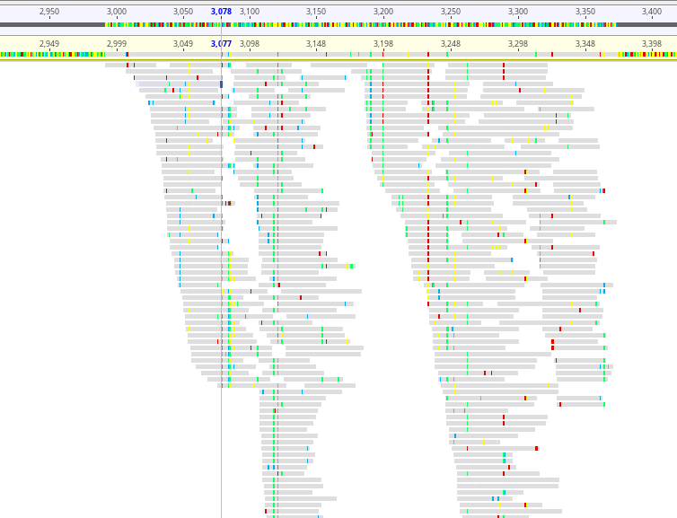
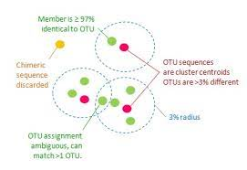

My Bioinformatic Work
This webpage is an overview of my bioinformatic work. I approach bioinformatics with a creative, problem-solving approach for diverse research questions. I have developed bioinformatic pipelines for a wide range of research projects, including population and phylogenetic studies, metagenomics, epigenetics, comparative genomics, transcriptomics, and gene expression of both host and pathogens. To address this diversity of research themes I strive to create tools that are flexible and can be applied across multiple projects. As a bioinformatician with a background in laboratory genetics, I understand the challenges that my colleagues face when approaching genomic data. I always work to create bioinformatic pipelines and workflows that allow all researchers on a project to explore the data.
The building blocks of bioinformatics
In my bioinformatics work I take a flexible approach to elucidate biological systems. I design dynamic analytic pipelines to fit the appropriate research questions while maintaining fundamental programmatic building blocks across all projects. To then convey the results of such complex biological interactions it is necessary to have good communications among all members of the research team. An essential component of my role is to train and teach these analytic building blocks and present research outputs visually and interactively.
I approach teaching with the same concepts. I ran a bioinformatics help session at the Department of Anatomy at the University of Otago, New Zealand.

